Content Inventory | Wireframes 1 - 2 - 3 | Copyright 2011 Paul Nguyen, Tony Nguyen, Paul Zaino
Basic Information
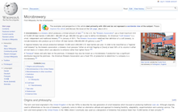
Wikipedia: Microbrewery
This Wikipedia article is a great resource to learn some basic information about what microbrew is and how
it differs from the mass produced beers. The article is fairly brief and it covers many of the basic facts
concerting microbreweries.
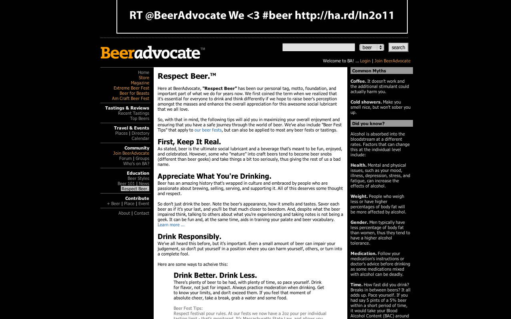
BeerAdvocate: Respect Beer
This is a fantastic article provided by beeradvocate.com that should help people understand how to respect beer
and appreciate it as a well crafted beverage rather than just using is as a way to get drunk. The article also covers
ways of making sure that you are enjoying your microbrew hobby responsibly.
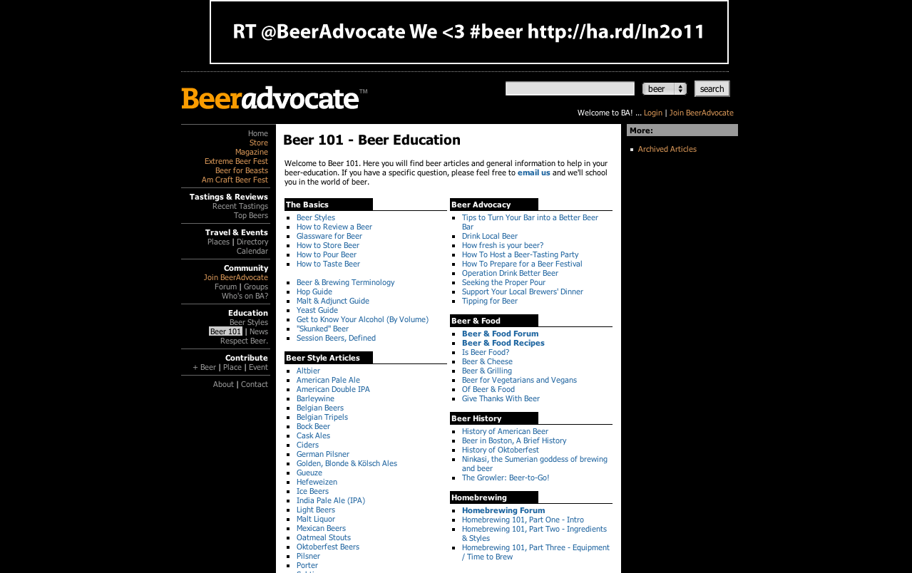
BeerAdvocate: Beer 101
This is a link to the beer 101 page on beeradvocate.com. This page provides a vast amount of useful links covering
the basics of beer, beer advocacy, beer history, food and beer, home brewing, as well as articles devoted to the
different types of beers.
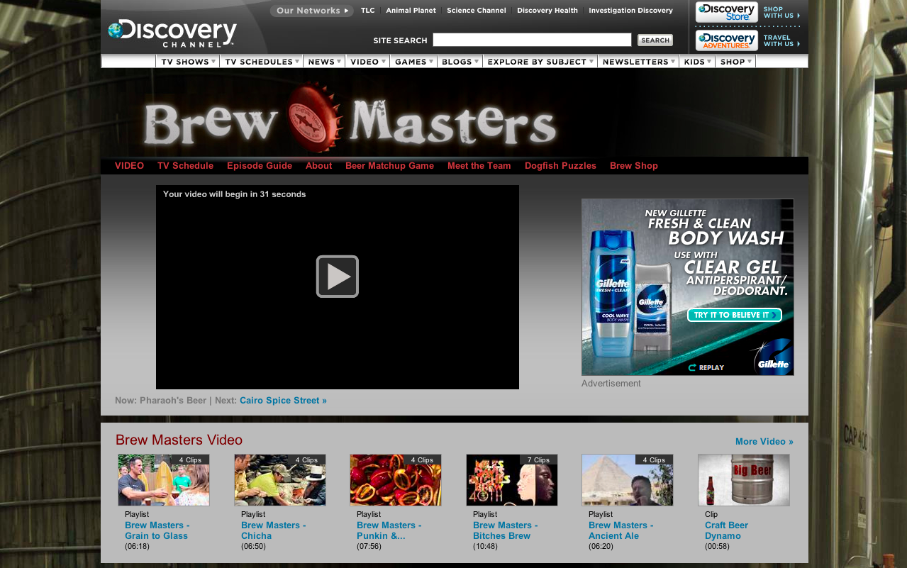
Discovery: Brew Masters
This is a link to Discovery's documentary style show about dogfish head brewery. It is great show that gives you
a glimpse into what its like at a microbrewery. This site has clips of the show as well as a link to a place where you
can watch full episodes.
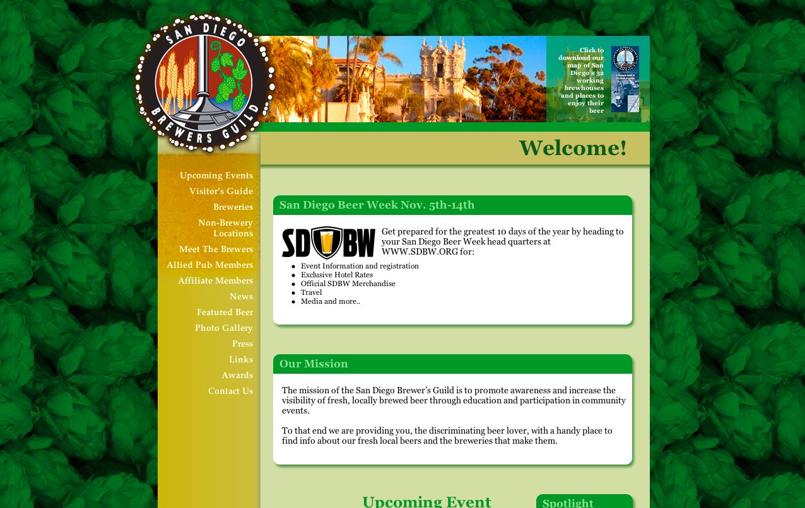
San Diego Brewers Guild
This site provides useful information about microbreweries and events in the local San Diego area. This is a great
resources if you want to learn more about what's going on in the microbrew community in the San Diego area.
Beer History
Drink Focus: Growth Of Microbreweries
This article, provided by drinkfocus.com, is a resource that concentrates more on the origins of microbreweries
and how they were influenced by prohibition. The article is brief and well organized making it a fun and easy read
to learn a bit more about the history of beer.
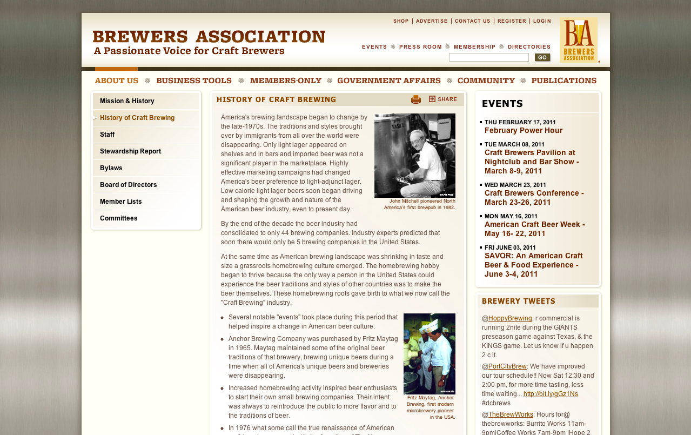
Brewer's Association: History of Craft Brewing
This is an article provided by the brewers association and it covers the history of craft brewing and how beer
production has developed into something that can be considered more of a culinary artform. The article is a bit
lengthy but it is very interesting and informative.
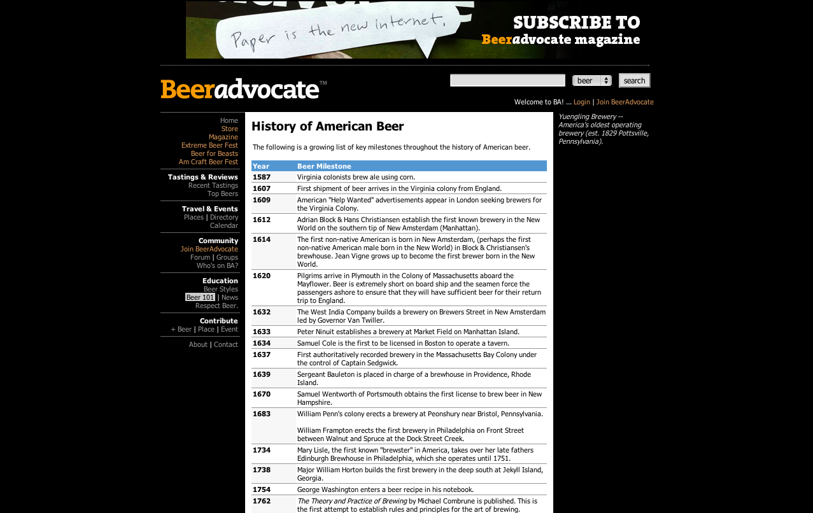
BeerAdvocate: History of American Beer
This link is to a page on beeradvocate.com that provides a brief history of American beer starting with the
Virginia colonists brewing ale with corn in 1587 all the way to the present day. The history on this page is displayed
in a timeline format making it easy to browse through to get a good understanding of how beer production has developed
throughout American history.
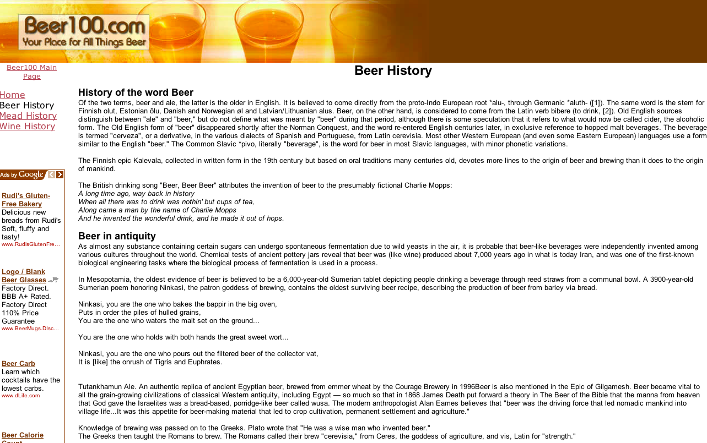
Beer100: Beer Timeline
This lengthy article gives a rather comprehensive history of beer in general. It also provides information
about the origins of the word beer.
Beer Styles
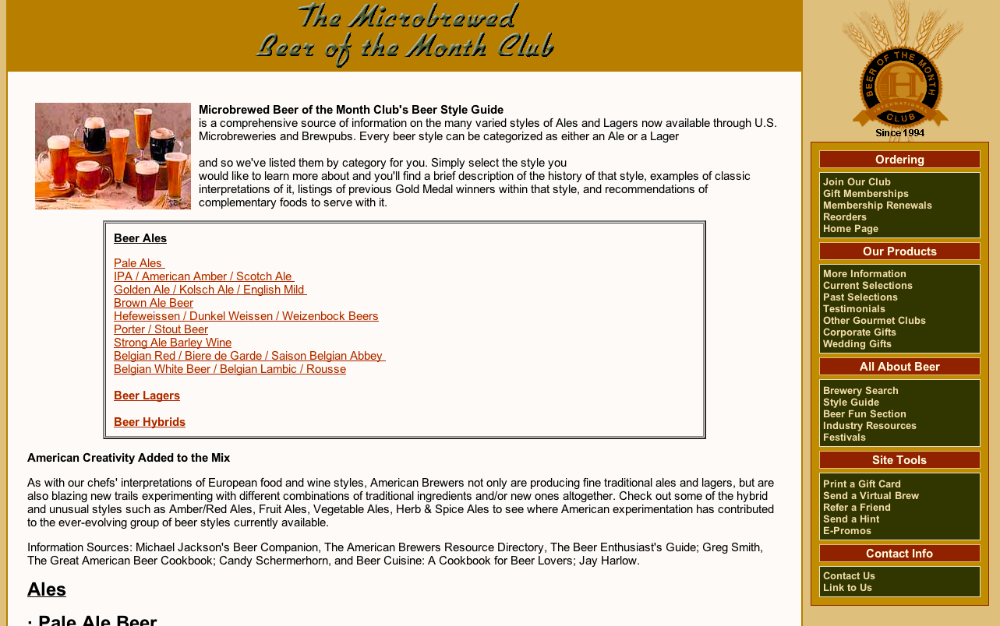
Beer of the Month Club: Beer Styles
This site provides a much more comprehensive outline of all the different types of beers. It divides brews up into
ales, lagers and hybrids. Then there is further explanation of each type within those categories.
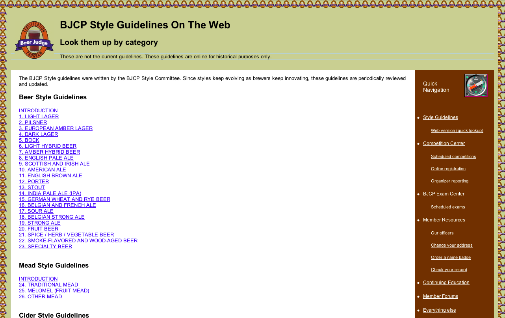
Beer Style Guidelines
This page provides a variety of links that show specific and strict guidelines for what traditionally accounts
for brews being divided up into different categories. This site provides the most in depth description of brew going
as far as stating the percentage of alcohol each style has as well as at what temperature it should be stored.
Tasting Information
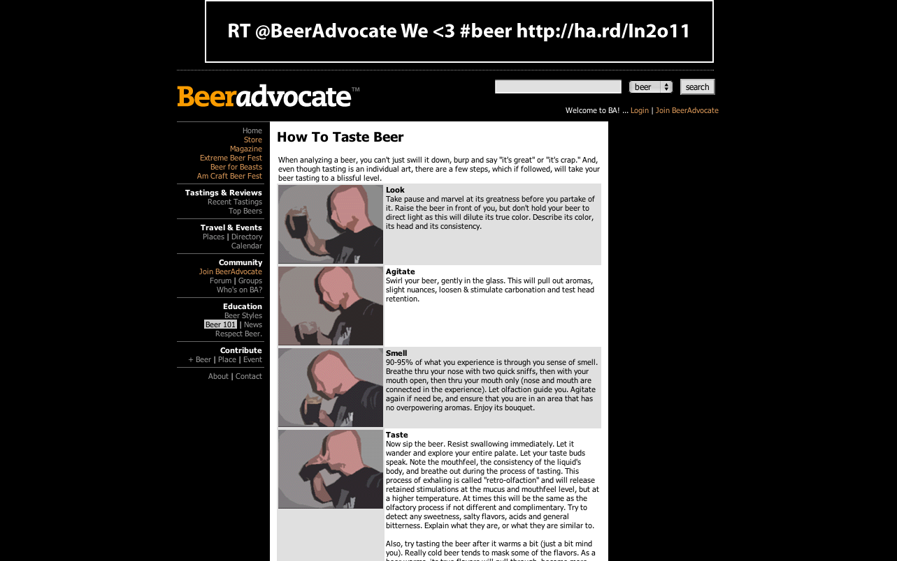
BeerAdvocate: How To Taste Beer
This is a short article provided by beeradcovate.com that helps people learn the proper way to go about tasting a
craft brew. It discusses in detail the different steps one should take including: looking, agitating, smelling and then
finally tasting.
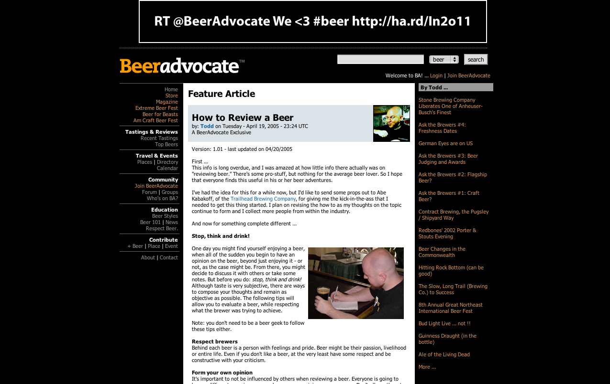
BeerAdvocate: How To Review Beer
This is yet another informative article provided by beeradvovate.com that discusses how to go about reviewing a beer.
It goes into the different conventions of considering the quality of the brew and shows the five basic qualities one
should be looking for: appearance, smell, taste, mouth feel, and drinkability.